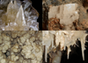

calcite

Definition: Calcite is a carbonate mineral and the most stable polymorph of calcium carbonate (CaCO3). It is a very common mineral, particularly as a component of limestone. Calcite defines hardness 3 on the Mohs scale of mineral hardness, based on scratch hardness comparison. Large calcite crystals are used in optical equipment, and limestone composed mostly of calcite has numerous uses.
Source: Wikipedia
Wikipedia Page
Wikidata Page